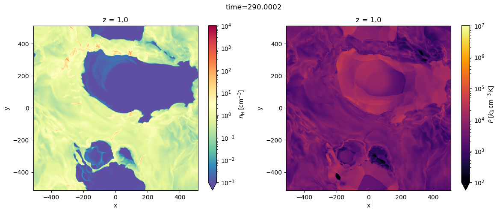
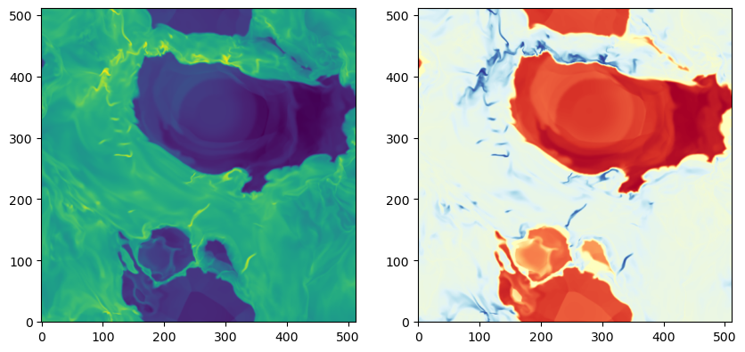
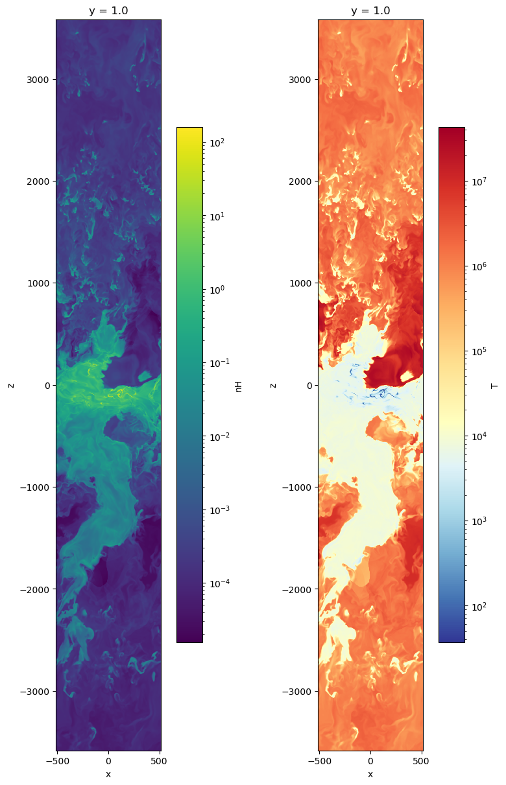

Quickstart: ASTRO-TIGRESS#
This is a concise introduction to pyathena, aimed mainly at new users.
Start by importing the necessary modules.
To use pyathena, add its directory to the PYTHONPATH environment variable in .bashrc or .bash_profile
export PYTHONPATH=/path/to/directory:$PYTHONPATH
Alternatively, you can dynamically add the path in your script or notebook.
import sys
sys.path.insert(0, '..')
import pyathena as pa
import numpy as np
import matplotlib as mpl
import matplotlib.pyplot as plt
import pandas as pd
import xarray as xr
LoadSim class#
The LoadSim class is the primary interface for handling Athena/Athena++ simulation data.
Use the help() function to access documentation for the class:
help(pa.LoadSim)
Pro Tip: Use class_or_func_name?, class_or_func_name??, help(class_or_func_name), or Shift+Tab in an interactive Python environment to view documentation, summaries, or source code.
Initialization#
Simulation Directory:
LoadSimuses thebasedirparameter to locate all output files (hst,hdf5,vtk, etc.).Save Directory: The
savdirparameter defines the directory for saving pickles and figures. If unspecified, it defaults tobasedir.Logger: A logger is attached to the
LoadSiminstance print out log messages. The verbosity can be adjusted by settingverbosetoTrue(equivalent"INFO") orFalse(equivalent"WARNING") or different levels of logging"DEBUG","INFO","WARNING","ERROR"(case insensitive). The default is set toFalse.Metadata : During the initialization,
FindFilesclass is initialized withinLoadSimand it tries to find the athinput file and (e.g.,athinput.runtime) or a file (e.g.,out.txt) where standard output is redirected to. It then reads in simulations parameters and code configuration and saves results to a dictionary of dictionaries,par, containing all information. Other important metadata include information about the computational domain (domain), the date and time when code was configured (config_time).Finding files : Find output files based on the information available from par. The
find_files()method can be called to find file names (files) and lists of snapshot numbers (nums*) again. File formats includeAthena-TIGRESS :
hst,sn,zprof,vtk,starpar_vtk,rst,timeitTIGRIS :
hst,sn,zprof,hdf5,rst,loop_time/task_time
basedir = '/projects/EOSTRIKE/TIGRESS_data_release/R8_2pc/'
s = pa.LoadSim(basedir, verbose=True)
[LoadSim-INFO] basedir: /projects/EOSTRIKE/TIGRESS_data_release/R8_2pc
[LoadSim-INFO] savdir: /projects/EOSTRIKE/TIGRESS_data_release/R8_2pc
[LoadSim-INFO] load_method: xarray
[FindFiles-INFO] athinput: /projects/EOSTRIKE/TIGRESS_data_release/R8_2pc/input/MHD/R8_2pc.par
[FindFiles-INFO] athena_variant: Athena
[FindFiles-INFO] problem_id: R8_2pc_rst
[FindFiles-INFO] vtk (joined): /projects/EOSTRIKE/TIGRESS_data_release/R8_2pc/0290/MHD nums: 290-390
[FindFiles-WARNING] starpar files not found in /projects/EOSTRIKE/TIGRESS_data_release/R8_2pc.
[FindFiles-INFO] timeit.txt not found.
[FindFiles-INFO] hst: /projects/EOSTRIKE/TIGRESS_data_release/R8_2pc/history/MHD/R8_2pc.hst
[FindFiles-WARNING] sn file not found in {0:s}, but <feedback>/iSN=5
[FindFiles-WARNING] zprof files not found in /projects/EOSTRIKE/TIGRESS_data_release/R8_2pc
[FindFiles-WARNING] rst files in out_fmt but not found.
# files in MHD or MHD_PI were found and stored
print(s.files["vtk"][0])
print(s.files["vtk_pi"][0])
/projects/EOSTRIKE/TIGRESS_data_release/R8_2pc/0290/MHD/R8_2pc.0290.vtk
/projects/EOSTRIKE/TIGRESS_data_release/R8_2pc/0290/MHD_PI/R8_2pc.0290.vtk
NOTE: temperature conversion is not properly handled in the pyathena for the data release VTK file#
need to manually update the function to calculate temperature.
from pyathena.classic.cooling import coolftn
def _T(d, u):
T1 = d['pressure']/d['density']*(u.velocity**2*ac.m_p/ac.k_B).cgs.value
T1data = T1.data
T1.data = coolftn().get_temp(T1data)
return T1
s.dfi["T"]["field_dep"] = {'pressure','density'}
s.dfi["T"]["func"] = _T
Attributes#
Print some (read-only) attributes of a LoadSim instance.
s.basedir
'/projects/EOSTRIKE/TIGRESS_data_release/R8_2pc'
s.basename
'R8_2pc'
s.problem_id
'R8_2pc_rst'
domain contains information about simulation domain
Nx: Number of cells
le/re: left/right edge
Lx: box size
dx: cell size
s.domain
{'Nx': array([ 512, 512, 3584]),
'ndim': 3,
'le': array([ -512, -512, -3584]),
're': array([ 512, 512, 3584]),
'Lx': array([1024, 1024, 7168]),
'dx': array([2., 2., 2.]),
'center': array([0., 0., 0.]),
'time': None}
Date and time when the code is compiled
par contains all input parameters and meta information
s.par.keys()
dict_keys(['job', 'log', 'output1', 'output2', 'output3', 'output4', 'output5', 'output6', 'time', 'domain1', 'problem', 'feedback', 'configure'])
s.par['output2']
{'out_fmt': 'vtk',
'out': 'prim',
'dt': 1.0,
'time': 322.0,
'num': 322,
'level': -1,
'domain': -1,
'id': 'out2'}
s.par['time']
{'grav_no': 1,
'cour_no': 0.3,
'nlim': -1,
'tlim': 700.0,
'time': 321.4286,
'nstep': 124359}
s.par['problem']
{'gamma': 1.66666667,
'surf': 12.0,
'sz0': 10.0,
'vturb': 10.0,
'beta': 10,
'Omega': 0.028,
'qshear': 1.0,
'SurfS': 42.0,
'zstar': 245.0,
'rhodm': 0.0064,
'R0': 8000.0,
'Sigma_SFR': 0.005,
'rho_crit': 1.0}
Other attributes.
s.savdir
'/projects/EOSTRIKE/TIGRESS_data_release/R8_2pc'
s.load_method
'xarray'
Finding files#
NOTE: If find_files() did not succeed in finding output files under basedir, check if the glob patterns s.ff.patterns are set appropriately. Update it and try again. For example, the history dump is found using the glob patterns /path_to_basedir/id0/*.hst first. If it fails, it searches again with /path_to_basedir/hst/*.hst, and then with /path_to_basedir/*.hst
s.files.keys()
dict_keys(['athinput', 'vtk', 'vtk_pi', 'hst'])
s.files['vtk'][0], s.files['vtk'][-1]
('/projects/EOSTRIKE/TIGRESS_data_release/R8_2pc/0290/MHD/R8_2pc.0290.vtk',
'/projects/EOSTRIKE/TIGRESS_data_release/R8_2pc/0390/MHD/R8_2pc.0390.vtk')
s.nums[0], s.nums[-1]
(290, 390)
type(s.ff)
pyathena.find_files.FindFiles
s.ff.patterns['hst']
[('history', 'MHD', '*.hst'), ('id0', '*.hst'), ('hst', '*.hst'), ('*.hst',)]
s.ff.patterns['vtk']
[('????', 'MHD', '*.????.vtk'), ('vtk', '*.????.vtk'), ('*.????.vtk',)]
Units#
Simulations run with Athena-TIGRESS/TIGRIS use the following code units
TIGRESS-classic:
Mean particle mass per H: \(\mu_{\rm H} = 1.4271\)
\(1\;{code\_density} \leftrightarrow n_{\rm H} = 1 {\rm cm}^{-3}\)
Length : 1 pc
Velocity : 1 km/s
TIGRESS-NCR:
Mean particle mass per H: \(\mu_{\rm H} = 1.4\)
\(1\;{code\_density} \leftrightarrow n_{\rm H} = 1 {\rm cm}^{-3}\)
Length : 1 pc
Velocity : 1 km/s
TIGRIS with
"ism"units:Mean particle mass per H: \(\mu_{\rm H} = 1.4\)
\(1.4\;{code\_density} \leftrightarrow \rho = 1.4 m_{\rm H}\;{\rm cm}^{-3} \leftrightarrow n_{\rm H} = 1 {\rm cm}^{-3}\)
Length : 1 pc
Velocity : 1 km/s
u = s.u
# or
# u = pa.Units(kind='LV', muH=1.4)
Print code units (astropy Quantity)
type(s.u.time)
astropy.units.quantity.Quantity
s.u.time, s.u.mass, s.u.density, s.u.length, s.u.velocity, s.u.muH,
(<Quantity 3.08567758e+13 s>,
<Quantity 0.03529472 solMass>,
<Quantity 2.38871334e-24 g / cm3>,
<Quantity 1. pc>,
<Quantity 1. km / s>,
1.4271)
s.u.energy, s.u.energy_density, s.u.momentum, s.u.momentum_flux
(<Quantity 7.01803729e+41 erg>,
<Quantity 2.38871334e-14 erg / cm3>,
<Quantity 0.03529472 km solMass / s>,
<Quantity 0.03609634 km solMass / (s yr kpc2)>)
Commonly used astronomical constants and units (plain numbers). Multiply them to convert quantities in code units to one in physical units. For example,
(code mass)*u.Msun = mass in Msun(code time)*u.Myr = time in Myr(code luminosity)*u.Lsun = luminosity in Lsun(code pressure)*u.pok = P/k_B in cm^-3 K
s.u.Msun, s.u.Myr, s.u.Lsun, s.u.pc, s.u.kms, s.u.pok
(0.03529472163499891,
0.9777922216807893,
5.9414602654995275e-06,
1.0,
1.0,
173.01380324473618)
VTK dump#
print(s.nums[0], s.nums[-1], len(s.nums)) # vtk file numbers in the directory
290 390 11
# use ivtk (index of pre-loaded vtk files; under MHD folder) rather than num to load files.
ds = s.load_vtk(ivtk=0)
[LoadSim-INFO] [load_vtk]: R8_2pc.0290.vtk. Time: 290.000200
ds.domain
{'all_grid_equal': True,
'ngrid': 1,
'le': array([-512., -512., -512.], dtype=float32),
're': array([512., 512., 512.], dtype=float32),
'dx': array([2., 2., 2.], dtype=float32),
'Lx': array([1024., 1024., 1024.], dtype=float32),
'center': array([0., 0., 0.], dtype=float32),
'Nx': array([512, 512, 512]),
'ndim': 3,
'time': 290.0002}
# manual load (e.g., for MHD_PI file)
from pyathena.io.read_vtk import AthenaDataSet
ds = AthenaDataSet(s.files["vtk_pi"][0], units=s.u, dfi=s.dfi)
# note that the vertical extent for this output is bigger (original)
ds.domain
{'all_grid_equal': True,
'ngrid': 1,
'le': array([ -512., -512., -3584.], dtype=float32),
're': array([ 512., 512., 3584.], dtype=float32),
'dx': array([2., 2., 2.], dtype=float32),
'Lx': array([1024., 1024., 7168.], dtype=float32),
'center': array([0., 0., 0.], dtype=float32),
'Nx': array([ 512, 512, 3584]),
'ndim': 3,
'time': 290.0002}
Note that domain['time'] is updated after reading loading a vtk file.
Field names#
The field_list contains all available variable names in vtk file, representing the raw data. The derived_field_list includes variables that are calculated based on those in the field_list, often expressed in more convenient units. Usually, fields in derived_field_list are in more convenient units. When in doubt, it is recommended to use variables from the field_list and calculate derived quantities yourself.
print(ds.field_list)
['density', 'velocity', 'pressure', 'cell_centered_B', 'specific_scalar[0]']
print(ds.derived_field_list)
['rho', 'nH', 'pok', 'pok_trbz', 'r', 'vmag', 'vr', 'vx', 'vy', 'vz', 'cs', 'csound', 'Mr', 'Mr_abs', 'rhovr2ok', 'vAmag', 'vAx', 'Bx', 'vAy', 'By', 'vAz', 'Bz', 'Bmag', 'pok_mag', 'T', 'cool_rate_cgs', 'heat_rate_cgs', 'net_cool_rate', 'Lambda_cool', 'nHLambda_cool', 'nHLambda_cool_net', 'Gamma_heat', 't_cool', 'j_X']
ds.dirname, ds.ext
('/projects/EOSTRIKE/TIGRESS_data_release/R8_2pc/0290/MHD_PI', 'vtk')
Read 3d data cubes#
With xarray=True option (default is True), read dataset as a xarray DataSet.
See http://xarray.pydata.org/en/stable/quick-overview.html for a quick overview of xarray.
help(ds.get_field) # Note: setting (le, re) manually may not work as intended
Help on method get_field in module pyathena.io.read_vtk:
get_field(field='density', le=None, re=None, as_xarray=True) method of pyathena.io.read_vtk.AthenaDataSet instance
Read 3d fields data.
Parameters
----------
field : (list of) string
The name of the field(s) to be read.
le : sequence of floats
Left edge. Default value is the domain left edge.
re : sequence of floats
Right edge. Default value is the domain right edge.
as_xarray : bool
If True, returns results as an xarray Dataset. If False, returns a
dictionary containing numpy arrays. Default value is True.
Returns
-------
dat : xarray dataset
An xarray dataset containing fields.
dat = ds.get_field(['nH', 'pok', 'T'])
Indexing follows the convention of the Athena code (k,j,i): for scalar fields, the innermost (fastest running) index is the x-direction, while the outermost index is the z-direction
dat['nH'].shape
(3584, 512, 512)
dat
<xarray.Dataset> Size: 11GB
Dimensions: (x: 512, y: 512, z: 3584)
Coordinates:
* x (x) float64 4kB -511.0 -509.0 -507.0 -505.0 ... 507.0 509.0 511.0
* y (y) float64 4kB -511.0 -509.0 -507.0 -505.0 ... 507.0 509.0 511.0
* z (z) float64 29kB -3.583e+03 -3.581e+03 ... 3.581e+03 3.583e+03
Data variables:
T (z, y, x) float32 4GB 1.151e+06 1.155e+06 ... 1.776e+06 1.714e+06
pok (z, y, x) float32 4GB 203.6 202.5 201.7 201.0 ... 416.5 414.9 414.6
nH (z, y, x) float32 4GB 7.656e-05 7.59e-05 ... 0.0001011 0.0001047
Attributes:
all_grid_equal: True
num: 290
ngrid: 1
le: [ -512. -512. -3584.]
re: [ 512. 512. 3584.]
dx: [2. 2. 2.]
Lx: [1024. 1024. 7168.]
center: [0. 0. 0.]
Nx: [ 512 512 3584]
ndim: 3
time: 290.0002
dfi: {'rho': {'field_dep': ['density'], 'func': <function set...dat.x
<xarray.DataArray 'x' (x: 512)> Size: 4kB array([-511., -509., -507., ..., 507., 509., 511.]) Coordinates: * x (x) float64 4kB -511.0 -509.0 -507.0 -505.0 ... 507.0 509.0 511.0
Mean value of nH, pressure/kB at the midplane
dat.sel(z=0, method='nearest').mean()
<xarray.Dataset> Size: 32B
Dimensions: ()
Coordinates:
z float64 8B 1.0
Data variables:
T float64 8B 2.582e+06
pok float64 8B 5.855e+03
nH float64 8B 0.6727Slice plots#
Use
dat.dfiors.dfi(derived field info) to set plot argumentsSee also https://docs.xarray.dev/en/latest/generated/xarray.plot.imshow.html
dat.dfi['nH']
{'field_dep': ['density'],
'func': <function pyathena.fields.fields.set_derived_fields_def.<locals>._nH(d, u)>,
'label': '$n_{\\rm H}\\;[{\\rm cm^{-3}}]$',
'norm': <matplotlib.colors.LogNorm at 0x152b66d1f740>,
'vminmax': (0.001, 10000.0),
'cmap': 'Spectral_r',
'scale': 'log',
'take_log': True,
'imshow_args': {'norm': <matplotlib.colors.LogNorm at 0x152b66d1f740>,
'cmap': 'Spectral_r',
'cbar_kwargs': {'label': '$n_{\\rm H}\\;[{\\rm cm^{-3}}]$'}}}
fig, axes = plt.subplots(1, 2, figsize=(14, 5))
dat['nH'].sel(z=0, method='nearest').plot.imshow(ax=axes[0], **dat.dfi['nH']['imshow_args'])
dat['pok'].sel(z=0, method='nearest').plot.imshow(ax=axes[1], **dat.dfi['pok']['imshow_args'])
plt.setp(axes, aspect='equal')
plt.suptitle(f'time={dat.time}')
Text(0.5, 0.98, 'time=290.0002')

Another example: plot slice of density and temperature at z=0
from pyathena.plt_tools.cmap_shift import cmap_shift
iz = ds.domain['Nx'][2] // 2
fig, axes = plt.subplots(1, 2, figsize=(10,5))
cmap_temp = cmap_shift(mpl.cm.RdYlBu_r, midpoint=3.0/7.0)
axes[0].imshow(d['nH'][iz,:,:], norm=LogNorm(), origin='lower')
axes[1].imshow(d['T'][iz,:,:], norm=LogNorm(), origin='lower',
cmap=cmap_temp)
<matplotlib.image.AxesImage at 0x152b4804cc50>

get_slice() method#
help(ds.get_slice)
Help on method get_slice in module pyathena.io.read_vtk:
get_slice(axis, field='density', pos='c', method='nearest') method of pyathena.io.read_vtk.AthenaDataSet instance
Read slice of fields.
Parameters
----------
axis : str
Axis to slice along. 'x' or 'y' or 'z'
field : (list of) str
The name of the field(s) to be read.
pos : float or str
Slice through If 'c' or 'center', get a slice through the domain
center. Default value is 'c'.
method : str
Returns
-------
slc : xarray dataset
An xarray dataset containing slices.
slc = ds.get_slice('y', ['nH', 'T', 'pressure']) # x-z slices
slc
<xarray.Dataset> Size: 22MB
Dimensions: (z: 3584, x: 512)
Coordinates:
* x (x) float64 4kB -511.0 -509.0 -507.0 -505.0 ... 507.0 509.0 511.0
y float64 8B 1.0
* z (z) float64 29kB -3.583e+03 -3.581e+03 ... 3.581e+03 3.583e+03
Data variables:
pressure (z, x) float32 7MB 1.171 1.162 1.152 1.143 ... 2.086 2.068 2.071
T (z, x) float32 7MB 1.289e+06 1.284e+06 ... 8.756e+05 8.74e+05
nH (z, x) float32 7MB 6.802e-05 6.777e-05 ... 0.0001769 0.0001775
Attributes:
all_grid_equal: True
num: 290
ngrid: 1
le: [ -512. -512. -3584.]
re: [ 512. 512. 3584.]
dx: [2. 2. 2.]
Lx: [1024. 1024. 7168.]
center: [0. 0. 0.]
Nx: [ 512 512 3584]
ndim: 3
time: 290.0002
dfi: {'rho': {'field_dep': ['density'], 'func': <function set...type(slc), type(slc.nH), type(slc.nH.data)
(xarray.core.dataset.Dataset, xarray.core.dataarray.DataArray, numpy.ndarray)
fig, axes = plt.subplots(1, 2, figsize=(8, 12), constrained_layout=True)
im1 = slc['nH'].plot(ax=axes[0], norm=LogNorm())
im2 = slc['T'].plot(ax=axes[1], norm=LogNorm(), cmap=cmap_temp)
for im in (im1, im2):
im.axes.set_aspect('equal')

2d histogram#
lognH = np.log10(dat['nH'].data.flatten())
logT = np.log10(dat['T'].data.flatten())
plt.hexbin(lognH, logT, mincnt=1, norm=mpl.colors.LogNorm())
plt.xlabel(r'$\log_{10}\,n_{\rm H}$')
plt.ylabel(r'$\log_{10}\,T$')
fig, ax = plt.subplots(1, 1, figsize=(6.5, 5))
d = ds.get_field('rho')
conv_Sigma = (1.0*au.g/au.cm**2).to('Msun pc-2').value
dz_cgs = ds.domain['dx'][2]*u.length.cgs.value
(d['rho'].sum(dim='z')*dz_cgs*conv_Sigma).plot.imshow(ax=ax,
cmap='pink_r', norm=mpl.colors.LogNorm(0.1, 2e2),
cbar_kwargs=dict(label=r'$\Sigma_{\rm gas}\;[M_{\odot}\,{\rm pc}^{-2}]$'))
ax.set_aspect('equal')
History dump#
# Read raw hst dump
h = pa.read_hst(s.files['hst']) # returns a pandas DataFrame object
h.columns
h.head()
Plot
timestep size
dt_mhd(code unit)(total gas mass)/(volume of box) (code units)
\(\Sigma_{\rm SFR,40 Myr}\) (Msun/yr/kpc^2)
ax = h.plot('time', y=['dt','mass', 'sfr40'])
ax.set_yscale('log')